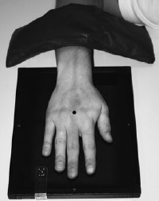

Hand(PA)
Centering point:Directed to 3rd metacarpophalangeal joint
Perpendicular to the IR

Cassette Size:24 x 30cm (10 x 12ins)
Landscape, divided in half usually fits 2 projections, use lead masking for unused area
Exposure Factors:50kVp on
2.5MaS
FFD:100cm
Bucky/Grid:No
Filter:No
Collimation:Centre: 3rd metacarpalphalangeal joint
Shutter A: Includes all of the distal phalanges to 2.5cm of the distal ulna and radius
Shutter B: To include soft tissues
Pathologies:Fractures, dislocations, foreign bodies. Pathological processes - osteoporosis and osteoarthritis
Position of patient and cassette
- The patient is seated alongside the table with the affected
arm nearest to the table.
- The forearm is pronated and placed on the table with the
palmer surface of the hand in contact with the cassette.
- The fingers are separated and extended but relaxed to ensure
that they remain in contact with the cassette.
- The wrist is adjusted so that the radial and ulna styloid
processes are equidistant from the cassette.
- A sandbag is placed over the lower forearm for immobilization.